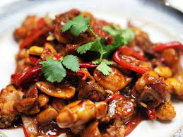

Description
A classic Chinese dish. Seasoned with peanuts, soy sauce, Hoisin sauce and more. This delectable dish is waiting for you down below!
Ingredients to start with
- Chicken broth/stock
- Light soy sauce
- Dark soy sauce
- Hoisin sauce
- Chinese black vinegar
- Chinese Wine (Shaoxing)
- Szechuan Peppercorns
- Chicken breast ( of course! :) )
Steps to make it!
- 1. Combine all ingredients for the chicken in a shallow bowl; cover and marinate for 10 minutes (if time allows).
- 2. Whisk sauce ingredients together until sugar dissolves; set aside
- 3. Heat a large skillet, pan or wok over high heat. Add 2 tablespoons of cooking oil, allow to heat up, then add marinated chicken.
Fry chicken for 3-4 minutes while occasionally stirring, until edges are browned. Remove from heat and set aside.
- 4. Add remaining cooking oil into the same pan/wok. Stir in garlic, ginger, chili diced peppers (capsicums)
and Sichuan peppercorns and stir fry for 1 minute.
- 5. Give the prepared sauce a mix, then pour it into the pan and bring it to a boil while stirring.
- 6. Once it begins to thicken slightly,
add chicken back into the pan/wok and mix all of the ingredients through the sauce until the chicken is evenly coated and sauce has thickened,
(about 2 minutes).
- 7. Stir in green onions, peanuts and sesame oil. Toss well and continue to cook for a further 2 minutes to infuse all of the flavours together.
- 8. Serve immediately with steamed/cooked rice or fried rice!